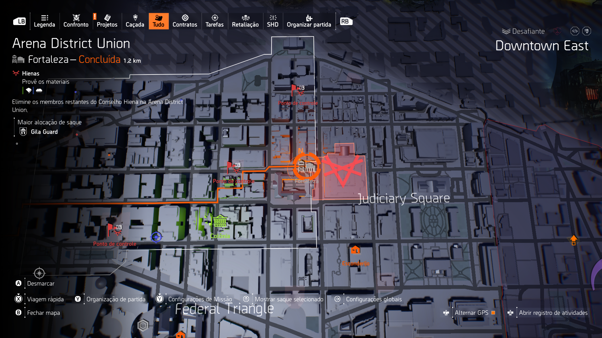

Lendária / Black Tusk
Pressão constante em salas fechadas
A Arena mistura corredores apertados, salas médias e ondas agressivas da Black Tusk. O grupo precisa evitar avanço desorganizado e manter foco em alvos que quebram cobertura.
Builds de controle, dano de habilidade e sniper funcionam muito bem porque permitem reduzir pressão sem exposição excessiva.
Controle
Black Tusk
Drones
Elite
Ver builds recomendadas